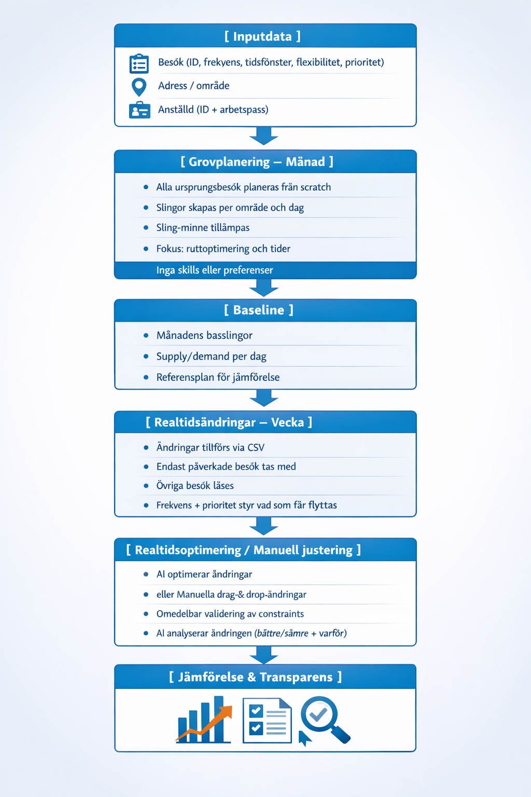

CAIRE × Attendo – Pilotdata, process och optimeringsflöde (Fas 1)
Vi har gått igenom CSV-underlaget och har lite konkret återkoppling kring datan, så att vi sätter rätt
förutsättningar från start. Vi har även sammanställt hur vi ser på pilotens databehov, planeringslogik och
optimeringsprocess, för att säkerställa att vi får ett upplägg som är:
- Operativt realistiskt för hemtjänst
- Mätbart mot Attendos nuvarande arbetssätt
- Transparent i varför ett schema blir bättre eller sämre
Nedan beskriver vi helheten: data → grovplanering → realtid → jämförelse.
1. Datagrund – vad vi behöver i piloten
1.1 Obligatorisk data (miniminivå endast tidsrelaterade krav)
Syfte:
Tillhandahålla minsta möjliga informationsmängd för att möjliggöra korrekt schemaläggning av:
- Rådata/instatsbeslut för månads-grovplanering av slingor
- Realtidsändringar
- Demand & supply-hantering – utan beroenden till långsiktiga eller aggregerade datapunkter
- Samt motsvarande planerade scheman för slingor och realtidsändringar på samma data
(slinga/dag/besök/anställd)
För att kunna grovplanera slingor över en månad och därefter hantera realtidsändringar behöver varje besök ha:
Besök:
| Fält |
Beskrivning |
| ObjectID |
Unikt besöks-ID (samma ID genom hela livscykeln: grovplan → realtid → utfört) |
| Adress / geokoordinat |
Besökets plats |
| Duration |
Besökets längd |
| Time window |
Starttid (räcker med duration och flexibilitet) |
| Flexibilitet |
± minuter |
| Dubbelbemanning |
Om besöket kräver två anställda |
| Frekvens |
Daglig, veckovis, varannan vecka, månadsvis |
| Prioritet |
Optional - frekvens kan räcka |
Anställd:
| Fält |
Beskrivning |
| EmployeeID |
Unikt ID för resursen |
| Arbetspass (Shift) |
Tidsintervall då den anställde är tillgänglig. Exempel: 07:00–16:00, 15:00–22:00 |
| Pauser (Breaks) |
Optional per individ. En eller flera pauser kopplade till arbetspasset: start, duration, flexibility
|
| Kontraktstyp |
Fast anställd eller timanställd |
Geografi:
- Start- och slutadress per anställd antas vara områdets kontor
- Ett område per CSV-fil
Medvetet utanför scope i fas 1
Följande används inte i fas 1 och ignoreras helt av optimeringen:
- Skills / kompetenser
- Preferenser
- Kontinuitet (vem som gjort besöket tidigare)
- Outnyttjade timmar
- Kontaktpersoner
- Alla datapunkter som kräver summering eller analys över tid
Konsekvens:
Optimeringen tar endast hänsyn till:
- Arbetstid, pauser och kostnader för anställda
- Adresser, frekvenser, tidsfönster och flexibilitet i besök
- Slingor för förenklad kontinuitet
- Inte till historik eller långsiktiga mål
Viktig avgränsning (designprincip):
I fas 1 optimerar CAIRE inom en given tidshorisont, inte över tid. Det gör modellen snabb, deterministisk och
fullt lämpad för realtidsändringar.
1.2 Varför frekvens är nödvändig
Frekvens krävs för att kunna grovplanera slingor över en hel månad och skapa ett realistiskt grundschema.
Exempel:
- Veckovis städning → torsdag 13:00–14:00, flexibilitet ±30 min
- Toalettbesök 4 ggr/dag → varje dag 07, 12, 17, 22, flexibilitet ±5 min
Frekvensen används för att:
- Placera besök korrekt över tid
- Skilja låsta dagliga besök från flyttbara vecko-/månadsbesök
- Analysera supply/demand per dag, vecka och månad
1.3 Schemaimport – tre tillstånd
För att möjliggöra fullständig jämförelse och analys behöver piloten stödja import av tre schematillstånd per
dag/område:
| Schematyp |
Beskrivning |
Användning |
| Oplanerat |
Besök utan tilldelad anställd/tid |
Baseline för optimering |
| Planerat |
Manuellt schema från eCare |
Jämförelse mot optimerat |
| Utfört |
Faktiskt genomfört schema |
Verifikation och analys |
CSV-format: En fil per område/dag med kolumn för schematyp (unplanned/planned/actual).
Dataflöde:
- Import oplanerat → Kör optimering → Jämför med planerat
- Import utfört → Jämför med optimerat → Identifiera avvikelser
OBS: Alla scheman (inkl. utfört) importeras via CSV från eCare. Phoniro/GPS är EJ
aktuellt för Attendo.
1.4 Transportläge (förenkling fas 1)
Endast bil (DRIVING) i fas 1 – ingen differentiering av transportläge.
Motivering:
- Promenadrutter: Korta avstånd → restidsskillnaden bil vs gång är minimal (några minuter)
- Bilslingor: Stora avstånd → alltid bil oavsett
Konsekvens: Timefold använder transportMode: DRIVING för alla vehicles/employees i
fas 1.
2. Sling-minne – inbyggd kontinuitet i fas 1
För att piloten ska spegla verklig hemtjänstplanering tar vi hänsyn till sling-minne:
En slinga = område + dag + arbetspass (ex. 07–16)
Varje slinga har:
- Ett EmployeeID
- En ordnad lista av ObjectID (1, 2, 3, 4…)
Detta innebär att:
- Samma anställd utför alla besök i slingans grundplan
- Grundläggande kontinuitet är inbyggd
- Vi slipper införa full kontaktperson-/preferenslogik i fas 1
Sling-minne över tid (testbart i piloten):
- Nivå A – daglig kontinuitet (bas): Varje dags slinga har samma anställd
- Nivå B – veckovis kontinuitet (utökad): Samma slingor återkommer samma veckodagar över
månadshorisonten
3. Process – grovplanering, realtid och jämförelse
Översiktligt flöde

4. Grovplanering – månad (baseline)
I detta steg:
- Planeras alla besök från scratch
- Slingor optimeras geografiskt och tidsmässigt
- Sling-minne appliceras
- Resultatet blir ett stabilt referensschema
5. Realtidsändringar – simulering i pilot
Realtidsändringar simuleras i piloten via CSV-fil och/eller direkt i schemavyn. Exempel på ändringar som kan
förekomma:
- Sjuk anställd
- Avbokning av besök
- Nytt besök
- Ändrad starttid eller duration
Varje ändring har ett ID som kan kopplas till:
- Relevant besök (t.ex. ObjectID eller motsvarande identifierare)
- Berörd slinga och/eller anställd
Detta gör det möjligt att spåra ändringar och jämföra manuella och optimerade versioner.
Grundprinciper för realtidsoptimering
Tidshorisont:
- Realtidsoptimering körs med veckovis tidshorisont för att behålla kontext kring flyttbara besök baserat på
frekvens
- Månadsvis horisont används inte i realtid, av både prestanda- och tidsaspektsskäl
Begränsad omoptimering:
- Endast ändrade eller påverkade objekt tas med i ny körning
- Grovplanerade och opåverkade besök/slingor är låsta
Flyttlogik:
- Dagliga besök flyttas i sista hand
- Vecko- och månadsbesök kan flyttas mellan dagar enligt sin frekvens
- Slingor bryts endast när regler och behov kräver det
Supply och demand i realtid
Realtidsändringar kan påverka både demand (besök) och supply (anställda). Optimeringen ska därför kunna justera
båda dimensionerna.
Demand – besök:
- Flytta besök mellan dagar
- Lägga till eller ta bort besök
- Ändra starttid eller duration
- Ändra antal besökstimmar (förberedelse för utnyttjad-timmar-pool i senare fas)
Supply – anställda (främst timanställda):
- Lägga till extra anställd och ny slinga vid ökat behov
- Byta anställd för slinga vid t.ex. sjukdom
- Ta bort anställd/slinga vid avbokningar
- Ändra skift eller tillgänglighet
Timanställda fungerar här som en flexibel resurs-pool för att hantera variationer utan att störa
grundplaneringen.
Manuell hantering och AI-stöd (samma schemavy)
Systemet ska vid realtidsändringar alltid erbjuda två parallella arbetssätt, i samma schemavy:
Manuellt:
- Lägga till / ta bort besök
- Flytta besök i tid eller mellan dagar
- Lägga till / ta bort timanställd
- Byta anställd för slinga
Alla manuella ändringar:
- Valideras direkt mot regler och constraints
- Visualiseras tydligt i schemat
AI-stött:
Användaren kan be AI:
- Kontrollera och analysera en manuell ändring (bättre/sämre, varför)
- Föreslå en optimerad lösning baserat på ändringen
Schemavyn är AI-agnostisk: det ska alltid vara tydligt vad som ändrats, oavsett om ändringen gjorts manuellt
eller av AI.
Kostnader, raster och kontraktsfördelning (inställningar)
För att hålla fas 1 enkel hanteras följande som globala inställningar, inte per individ i CSV:
- Kostnad fast anställd
- Kostnad timanställd
- Standardraster (default)
- Önskad fördelning mellan fast och timanställda i grovplanering (t.ex. 80 % fast / 20 % tim → vid 10 slingor
= 8 fasta, 2 tim)
Dessa inställningar kan:
- Anges vid ny grovplanering, eller
- Justeras som en override vid omplanering
6. Manuell planering + AI (lika viktiga)
Manuellt
- Drag & drop i schemavyn
- Endast tillåtna flyttar är möjliga
- Omedelbar visuell validering (färg, ikon, blockering)
AI-stöd
AI analyserar manuella ändringar utan att optimera om.
Visar:
- Om ändringen förbättrar eller försämrar schemat
- Vilka mål/constraints som påverkas
- KPI:er
7. Restidsanalys med kartvy
7.1 Syfte
Visualisera och validera restider genom geografisk kartvy:
- Jämför manuella (planerade) restider med optimerade
- Identifiera orealistiska restidsestimat
- Verifiera geografisk logik i slingor
7.2 Funktioner i fas 1
- Kartvy per slinga/dag: Visa besöksordning med ruttlinje
- Restidsjämförelse: Manuell vs Timefold-estimat vs faktisk (från utfört schema)
- Avvikelsemarkering: Flagga stora skillnader (>20%)
7.3 KPI-påverkan
| Metric |
Källa manuell |
Källa optimerad |
Källa utförd |
| Restid per besök |
eCare CSV |
Timefold output |
eCare CSV (actuals) |
| Total restid/dag |
Summering |
Timefold KPI |
Faktisk från CSV |
| Restidsavvikelse |
- |
Optimerad - manuell |
Utförd - planerad |
8. Jämförelse mot manuella scheman (Attendos krav)
Piloten möjliggör jämförelse på flera nivåer:
8.1 KPI-jämförelse
- Effektivitet (besökstid/arbetstid)
- Arbetstid
- Besökstid
- Restid
- Väntetid
- Assigned / unassigned visits (antal + tid)
- Finansiellt: kostnader, intäkter och marginal (optional - uppdelat på individnivå)
- (Förberedelse inför outnyttjade timmar-pool i fas 2)
8.2 Transparens & förklarbarhet (minst lika viktigt)
CAIRE visar alltid:
- Vad som ändrats
- Varför det ändrats
- Vilka constraints/mål som påverkats
Detta är avgörande när:
- Ett manuellt schema visar bättre KPI:er
- Men samtidigt bryter mot regler eller mål
Då kan vi:
- Verifiera att det manuella schemat är ogiltigt, eller
- Justera constraints så att CAIRE medvetet kan bortse från dem
👉 Transparens är A och O – inte bara siffror.
8.3 Utfört schema (Actuals)
Import av utförda scheman (via CSV från eCare) möjliggör:
- Validering av optimering: Hur väl motsvarar optimerat schema verkligheten?
- Avvikelseanalys: Identifiera systematiska avvikelser
- Lärande: Justera constraints baserat på verkligt utfall
Datapunkter från utfört schema (CSV):
- Faktisk starttid vs planerad
- Faktisk duration vs planerad
- Faktisk restid (beräknad från tider i CSV)
- Avbokningar och tillägg
- Anställd som utförde besöket
Koppling till framtida optimering:
Utförda scheman matar tillbaka till systemet för:
- Bättre restidsestimat
- Realistiska durationsuppskattningar
- Kontinuitetshistorik
9. Avgränsning – vad ligger i fas 2
Fas 2 lägger till funktioner som kräver historik och analys över tid.
9.1 Avancerade constraints
- Skills/kompetens-matching
- Preferenser (klient ↔ vårdgivare)
- Kontaktperson-logik
9.2 Kontinuitetsanalys
- Full kontinuitetslogik (vem som gjort besöket tidigare)
- Kontinuitets-KPI (antal olika vårdgivare)
- Kontaktperson-procent
9.3 Supply/demand över tid
- Outnyttjade timmar-pool (100 % flexibilitet)
- Demand-analyser över tid (geografiskt, kompetens)
- Kapacitetshistogram och dashboards
9.4 Cross-area optimering
- Optimering över flera områden samtidigt
- Förslag om klientflytt till bättre passande område
9.5 WebSocket (valfritt)
- Realtidsuppdateringar under optimering
- Polling fungerar i fas 1
9.6 Bryntum UI fas 2
Tillägg utöver fas 1:
- Skills/kompetensfiltrering
- Preferensvisning
- Kontaktperson-logik
- Outnyttjade timmar-pool
- Analyser över tid
- Cross-area-vy
Avslutande samsynsfråga
Om vi har samsyn kring detta ungefärliga flöde – grovplanering av slingor över en månad från scratch,
sling-minne, veckovis realtidsoptimering samt full jämförbarhet och transparens mot manuella scheman – ser vi
detta som tillräckligt för att rättvist och mätbart utvärdera hur CAIRE förbättrar schemaläggning jämfört med
Attendos nuvarande arbetssätt, både vid grundplanering och vid realtidsändringar.